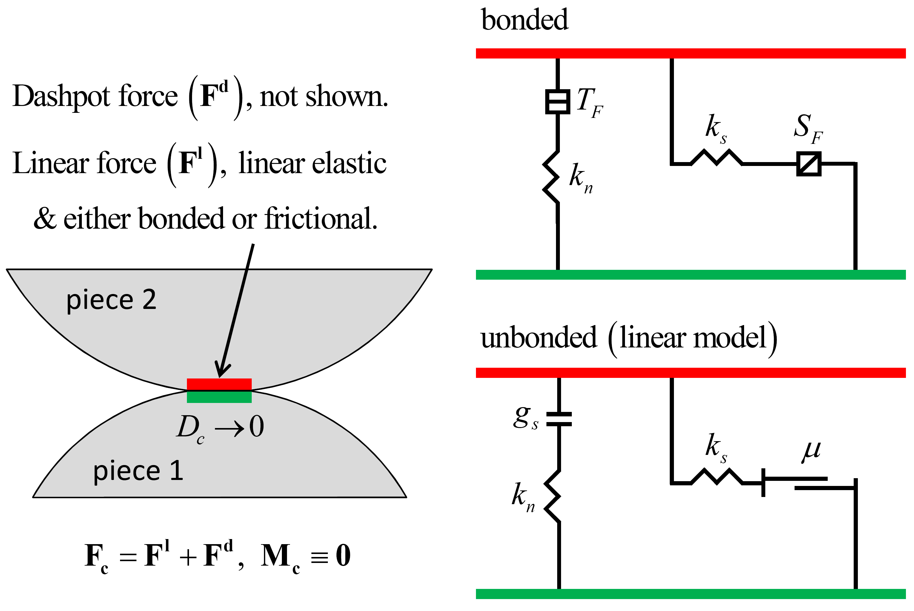
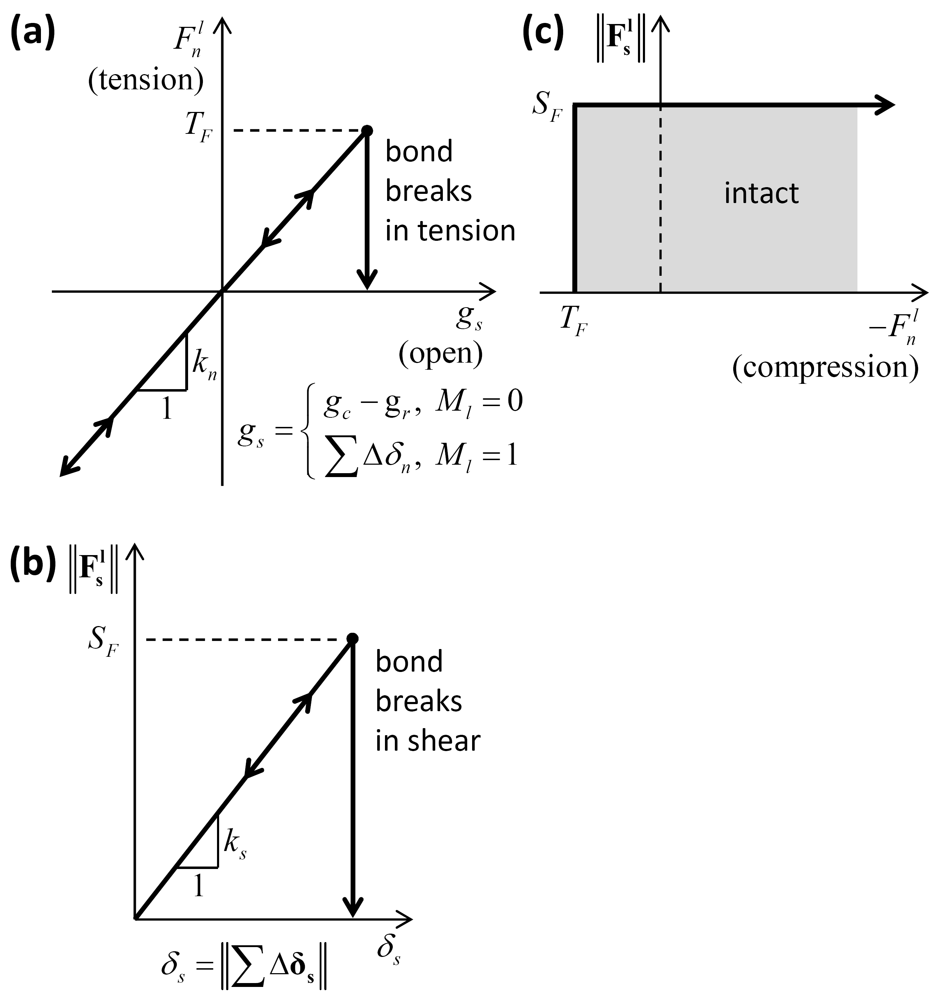

线性接触黏结模型
阻尼器未激活且参考间隙为零的线性接触黏结模型对应于 [Potyondy2004a] 的接触黏结模型。它是一种线性类模型（linear-based model）， 可安装于球-球接触和球-面片接触，在命令 和 FISH 中称为 linearcbond。
引言
接触黏结可以看作一对弹性弹簧（或一个胶结点），其 法向和剪切刚度为常数，作用在接触点上。这两个弹簧具有 指定的抗拉强度和抗剪强度。接触黏结的存在排除了 滑移的可能性，即剪切力不再受摩擦系数与法向力乘积的限制； 取而代之，剪切力受抗剪强度限制。接触黏结允许 在有间隙的接触处产生拉伸力。该拉伸力受抗拉强度 限制。
若法向力超过抗拉强度，则黏结破坏，法向力和 剪切力都设为零。若剪切力超过抗剪强度，则黏结破坏， 但只要剪切力不超过摩擦系数与法向力的乘积， 且法向力为压缩状态，接触力就不作改变。
行为概要
线性接触黏结模型提供一种传递力的极微小界面的行为，该界面为线弹性， 且为黏结或摩擦状态（见图 1（Figure 1））。 该界面不抵抗相对转动，并且要么是黏结的，要么是未黏结的。若处于黏结状态， 则行为为线弹性，直到超过强度极限、黏结破坏， 使界面变为未黏结。若未黏结，则行为为线弹性加摩擦， 滑移通过在剪切力上施加 Coulomb 极限来体现。未黏结的 线性接触黏结模型与线性模型（linear model）等价。


图 1：阻尼器未激活时线性接触黏结模型的行为与流变组件。
活动-删除准则
采用线性接触黏结模型的接触，若已黏结或其表面 间隙小于或等于零，则为激活状态。对未激活的接触会跳过力-位移律。 表面间隙见 linear 公式中的该（this）图。 当参考间隙为零时，名义表面与块体表面重合。
力-位移定律
未黏结线性接触黏结模型的行为与线性模型相同（见此（this）节）。本讨论描述的是黏结情形。黏结线性接触黏结模型的力-位移律与线性模型不同：(a) 线性力可以变为拉伸；(b) 不能发生滑移（黏结破坏后可以发生滑移）；(c) 阻尼器无拉伸模式 \((M_{d} =\left\{1,3\right\})\) 被停用，因此阻尼器力可以变为拉伸；(d) 阻尼器滑移-截断模式 \((M_{d} =\left\{2,3\right\})\) 被停用，因此阻尼器力不依赖于滑移状态。
线性法向力的更新取决于法向力更新模式 \(M_l\)。当 \(M_l=0\)（即绝对法向力更新模式激活）时，法向力变为
当 \(M_l=1\)（即增量法向力更新模式激活）时，法向力变为
式 (1) 和 (2) 与 linear 节中该（this）公式不同， 后者施加了无拉伸行为。当存在接触黏结时， 不施加无拉伸行为。
线性剪切力的更新变为
式 (3) 与 linear 节中该（this）公式不同， 后者施加了 Coulomb 滑移条件。当存在接触黏结时 不能发生滑移。
阻尼器法向力的更新变为
式 (4) 与 linear 节中该（this）公式不同，后者施加了无拉伸行为。当存在接触黏结时， 阻尼器力可以变为拉伸。
阻尼器剪切力的更新变为
式 (5) 与 linear 节中该（this）公式不同，后者施加了滑移-截断行为。当存在接触黏结时， 阻尼器力不依赖于滑移状态。
施加强度极限（见图 2（Figure 2））。若超过抗拉强度 极限 \(\left(F_{n}^{l} >T_{F} \right)\)，则使黏结发生拉伸破坏：
若黏结尚未发生拉伸破坏，则施加抗剪强度极限。若超过抗剪强度 极限 \(\left(\left\| \mathbf{F_{s}^{l}} \right\| >S_{F} \right)\)，则使黏结发生 剪切破坏：
若黏结已断裂，则触发 bond_break 回调事件。强度限值在滑移条件执行与阻尼力更新之前即被强制实施。


图 2：黏结线性接触黏结模型线性分量的力-位移律： (a) 法向力与表面间隙的关系，(b) 剪切力与相对剪切位移的关系 以及 (c) 破坏包络线。
能量分区
线性接触黏结模型提供三个能量分区：
- 应变能 \(E_{k}\)，储存在线性弹簧中；
- 滑移能 \(E_{\mu }\)，定义为摩擦滑移耗散的总能量；以及
- 阻尼器能量 \(E_{\beta }\)，定义为阻尼器耗散的总能量。
应变能、滑移能和阻尼器能量的更新与线性模型相同（见 此（this）节）。滑移能在黏结破坏之前 保持为零。下表（below）列出了这些能量分区（以及它们在命令和 FISH 中所用的 关键字）。
| 关键字 | 符号 | 说明 | 范围 | 累积 |
|---|---|---|---|---|
| 线性组： | ||||
energy‑strain |
\(E_{k}\) | 应变能 | \([0.0,+\infty)\) | NO |
energy‑slip |
\(E_{\mu}\) | 滑动耗散的总能量 | \((-\infty,0.0]\) | YES |
| 阻尼器组： | ||||
energy‑dashpot |
\(E_{\beta}\) | 阻尼器耗散的总能量 | \((-\infty,0.0]\) | YES |
属性
线性接触黏结模型所定义的属性列于下表中以供快速查阅；表中各列信息的说明见“接触属性（Contact Properties）”一节。 下文还将讨论由表面可继承属性到接触模型属性的映射关系。
| 关键字 | 符号 | 说明 | 类型 | 范围 | 默认 | 可修改 | 可继承 |
|---|---|---|---|---|---|---|---|
| linearcbond | 模型名称 | ||||||
| 线性组： | |||||||
| kn | \(k_n\) | 法向刚度 [力/长度] | FLT | \([0.0,+\infty)\) | 0.0 | YES | YES |
| ks | \(k_s\) | 剪切刚度 [力/长度] | FLT | \([0.0,+\infty)\) | 0.0 | YES | YES |
| fric | \(\mu\) | 摩擦系数 [-] | FLT | \([0.0,+\infty)\) | 0.0 | YES | YES |
| rgap | \(g_r\) | 参考间隙 [长度] | FLT | \(\mathbb{R}\) | 0.0 | YES | NO |
| lin_mode | \(M_l\) | 法向力更新模式 [-] | INT | \(\{0,1\}\) | 0 | YES | NO |
| \(\;\;\;\;\;\;\begin{cases} \mbox{0: update is absolute} \\ \mbox{1: update is incremental} \end{cases}\) | |||||||
| emod | \(E^*\) | 有效模量 [力/面积] | FLT | \([0.0,+\infty)\) | 0.0 | NO | N/A |
| kratio | \(\kappa^*\) | 法向与剪切刚度比 [-] | FLT | \([0.0,+\infty)^*\) | 0.0\(^*\) | NO | N/A |
| \(\kappa^* \equiv \frac{k_n}{k_s}\) | |||||||
| lin_slip | \(s\) | 滑动状态 [-] | BOOL | {false,true} | false | NO | N/A |
| \(\;\;\;\;\;\;\begin{cases} \mbox{true: slipping} \\ \mbox{false: not slipping} \end{cases}\) | |||||||
| lin_force | \(\mathbf{F^l}\) | 线性力（接触面坐标系） | VEC | \(\mathbb{R}^3\) | \(\mathbf{0}\) | YES | NO |
| \(\left( -F_n^l,F_{ss}^l,F_{st}^l \right) \quad \left(\mbox{2D model: } F_{ss}^l \equiv 0 \right)\) | |||||||
| user_area | \(A\) | 恒定面积 [长度*长度] | FLT | \((0.0,+\infty)\) | 0.0 | YES | NO |
| 阻尼器组： | |||||||
| dp_nratio | \(\beta_n\) | 法向临界阻尼比 [-] | FLT | \([0.0,1.0]\) | 0.0 | YES | NO |
| dp_sratio | \(\beta_s\) | 剪切临界阻尼比 [-] | FLT | \([0.0,1.0]\) | 0.0 | YES | NO |
| dp_mode | \(M_d\) | 阻尼器模式 [-] | INT | {0,1,2,3} | 0 | YES | NO |
| \(\;\;\;\;\;\;\begin{cases} \mbox{0: full normal & full shear} \\ \mbox{1: no-tension normal & full shear} \\ \mbox{2: full normal & slip-cut shear} \\ \mbox{3: no-tension normal & slip-cut shear} \end{cases}\) | |||||||
| dp_force | \(\mathbf{F^d}\) | 阻尼力（接触面坐标系） | VEC | \(\mathbb{R}^3\) | \(\mathbf{0}\) | NO | NO |
| \(\left( -F_n^d,F_{ss}^d,F_{st}^d \right) \quad \left(\mbox{2D model: } F_{ss}^d \equiv 0 \right)\) | |||||||
| 接触黏结组： | |||||||
| cb_tenf | \(T_F\) | 抗拉强度 [力] | FLT | \([0.0,+\infty)\) | 0.0 | YES | NO |
| cb_shearf | \(S_F\) | 抗剪强度 [力] | FLT | \([0.0,+\infty)\) | 0.0 | YES | NO |
| cb_tens | \(T_{\sigma }\) | 抗拉强度 [应力] | FLT | \([0.0,+\infty)\) | 0.0 | NO | NO |
| cb_shears | \(S_{\sigma }\) | 抗剪强度 [应力] | FLT | \([0.0,+\infty)\) | 0.0 | NO | NO |
| cb_state | \(B\) | 黏结状态 | INT | {0,1,2,3} | 0 | NO | NO |
| \(\;\;\;\;\;\;\begin{cases} \mbox{0: unbonded} \\ \mbox{1: unbonded & broke in tension} \\ \mbox{2: unbonded & broke in shear} \\ \mbox{3: bonded} \end{cases}\) | |||||||
| \(^*\) 按惯例，若法向或剪切刚度任一为 0，则 \(\kappa^* = 0.0\)。 | |||||||
注意
作用在物体上的不平衡力在力-位移计算过程中累积。修改 存储在接触模型中的力 不会立即改变它们。因此，对 \(\mathbf{F^l}\) 的任何更改 只可能在下次力-位移计算时生效。 当 \(M_l = 0\) 时，线性力的法向分量会在下次 力-位移计算时被自动覆盖。
表面属性继承
线性刚度 \(k_n\) 和 \(k_s\) 以及摩擦系数 \(\mu\) 可以从 接触块体继承。属性继承的详情见 linear 公式中的此（this）节。
方法
| 方法 | 参数 | 符号 | 类型 | 范围 | 默认 | 说明 |
|---|---|---|---|---|---|---|
| 线性组： | ||||||
| area | 把 user_area 设为该面积 | |||||
| deformability | 设置可变形性 | |||||
| emod | \(E^*\) | FLT | \([0.0,+\infty)\) | N/A | 有效模量 | |
| kratio | \(\kappa^*\) | FLT | \([0.0,+\infty)^*\) | N/A | 法向与剪切刚度比 | |
| 接触黏结组： | ||||||
| bond | 若 \(g_c \in G\) 则黏结该接触 | |||||
| gap | \(G\) | VEC2 | \(\mathbb{R}^2\) | \((-\infty,0]\) | 间隙区间 | |
| unbond | 若 \(g_c \in G\) 则解除接触的黏结 | |||||
| gap | \(G\) | VEC2 | \(\mathbb{R}^2\) | \((-\infty,0]\) | 间隙区间 | |
| cb_strength | 设置抗拉强度和抗剪强度 | |||||
| tensile | \(T_\sigma\) | FLT | \([0.0,+\infty)\) | N/A | 抗拉强度 [应力] | |
| shear | \(S_\sigma\) | FLT | \([0.0,+\infty)\) | N/A | 抗剪强度 [应力] | |
| \(^*\) 按惯例，设置 \(\kappa^* = 0.0\) 会设置 \(k_s = 0.0\)，但不改变 \(k_n\)。 | ||||||
面积
通过当前接触面积设置 user_area 属性。此操作意味着接触面积保持不变，且不随片体尺寸/几何的变化而改变。为了按该面积重新计算刚度，随后应调用 deformabilty 方法。
可变形性
黏结
若各块体之间的接触间隙处于黏结间隙区间内，则通过黏结该界面来创建接触黏结。若未指定间隙，则当块体相互重叠时界面即被黏结。可用 gap 关键字指定单个值，对应最大间隙。通过在 接触模型分配表（CMAT）（Contact Model Assignment Table (CMAT)） 的 contact cmat default 命令中将 \(g_b\) 指定为 proximity，可以确保所有接触间隙小于指定黏结间隙 \((g_b)\) 的块体之间都存在接触。
解除黏结
若各块之间的接触间隙位于黏结间隙区间内，则通过解除该界面黏结来移除接触黏结。若未指定间隙，则当各块重叠时界面被解除黏结。可用 gap 关键字指定单个值（对应最大间隙）。若界面被解除黏结，则黏结状态变为未黏结（\(B=0\)）。线性力不受影响，将在下一循环中更新。
cb_strength
以应力单位表示的强度（\(T_{\sigma }\) 与 \(S_{\sigma }\)）是 cb_strength 方法的参数，该方法以力单位（\(T_{F}\) 与 \(S_{F}\)）设置强度：
使用 linear 公式中该（this）图所示材料体积的面积。请注意，可用 user_area 属性覆盖该体积，从而直接指定接触面积。
回调事件
| 事件 | 数组槽位 | 值类型 | 范围 | 说明 |
|---|---|---|---|---|
| contact_activated | 接触已变为活动 | |||
| 1 | C_PNT | N/A | 接触指针 | |
| 线性组： | ||||
| slip_change | 滑动状态已改变 | |||
| 1 | C_PNT | N/A | 接触指针 | |
| 2 | INT | {0,1} | 滑动变化模式 | |
| \(\;\;\;\;\;\;\begin{cases} \mbox{0: slip has initiated} \\ \mbox{1: slip has ended} \end{cases}\) | ||||
| 接触黏结组： | ||||
| bond_break | 黏结已破坏 | |||
| 1 | C_PNT | N/A | 接触指针 | |
| 2 | INT | {1,2} | 破坏模式 | |
| \(\;\;\;\;\;\;\begin{cases} \mbox{1: failed in tension} \\ \mbox{2: failed in shear} \end{cases}\) | ||||
| 3 | FLT | \([0.0,+\infty)\) | 破坏强度 [力] （\(T_F\) 或 \(S_F\)，取决于破坏模式） | |
下面列出的待办事项
示例 1：简单模型
使用 cmat 和 distribute 命令装配由球组成的集合体。 使用 contact property 命令安装黏结。
或者，使用接触模型方法安装黏结并修改属性。
示例 2：验证示例
对球-球接触演练力-位移律——法向和剪切加载。 对系统进行刚体旋转，并跟踪局部坐标系和整体坐标系中的力。
示例 3：fischall 事件
演练不同的 fischall 事件。
模型概要
线性接触黏结模型方法的字母顺序列表见此处（here）。 线性接触黏结模型属性的字母顺序列表见此处（here）。
参考文献
| [Potyondy2004a] | Potyondy, D.O. 与 P.A. Cundall，“A Bonded-Particle Model for Rock”，Int. J. Rock Mech. & Min. Sci，41(8)，1329-1364，2004。 |
| 这些内容对您有帮助吗？… | FLAC3D © 2019, Itasca | 原文更新于 2020 年 10 月 8 日 |